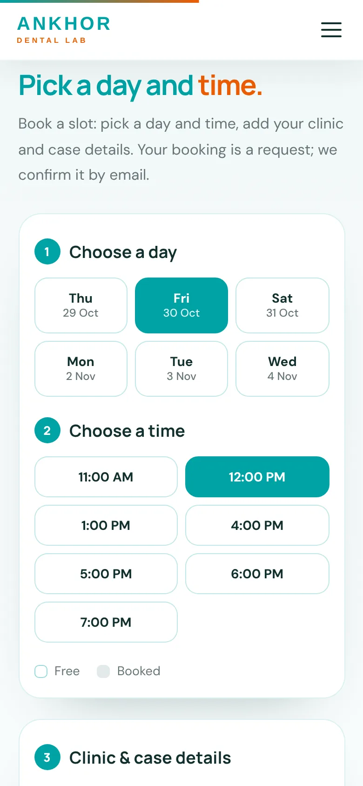
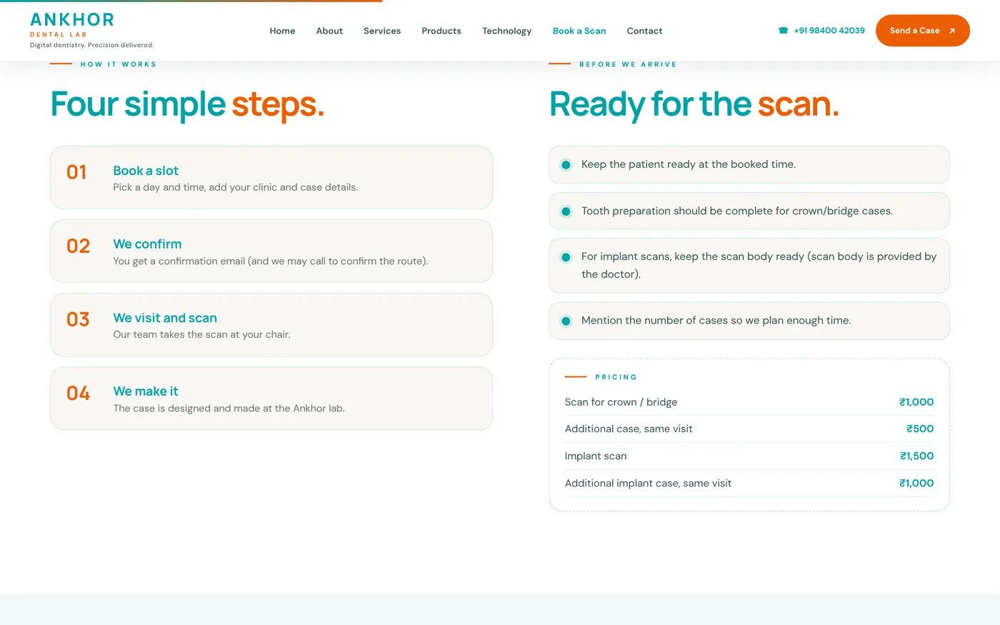
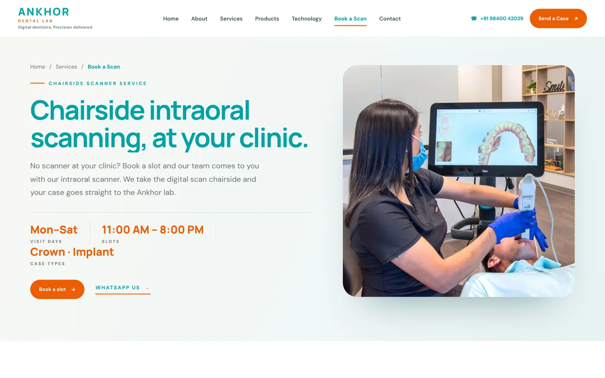

Ankhor offers chairside intraoral scanning: clinics without a scanner book a slot, and the lab's team comes to the clinic and scans the patient. Booking those visits by phone meant back-and-forth and double bookings, so I built an online scan booking platform with its own dashboard.
Pick a day and time
Clinics choose a free day and a free time slot on the Book a Scan page. Available and booked slots are shown clearly, so there's no guessing.


Clinic and case details in one form
The same page collects the clinic name, doctor, phone, email, address, number of cases, case type (crown/bridge or implant), whether the scan body is ready and any notes. The team arrives knowing exactly what to expect.
No double bookings
As soon as a slot is booked it shows as taken, so two clinics can't book the same visit.
A dashboard for the team
Every booking goes into a dashboard where the team manages the schedule, instead of tracking visits on paper or in chats.
A clear four-step process
The page explains the process in four steps: book a slot, the lab confirms, the team visits and scans, and the lab makes the case. It also lists what to prepare before the visit and the pricing.

